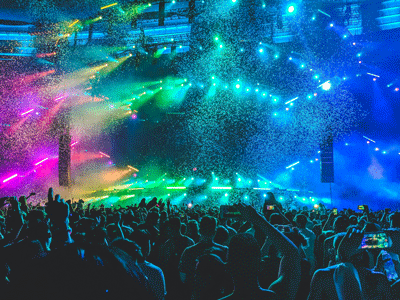
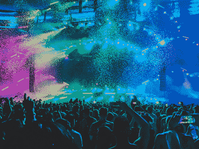

- 80% JPG
- 92 kb
- good quality image
- 40% JPG
- 29 kb
- okay quality image

- 256 color GIF
- 84 kb
- good quality image
- 64 color GIF
- 56 kb
- okay quality image

- 8 color GIF
- 27 kb
- poor quality image
- 242 color PNG
- 45 kb
- okay quality image

